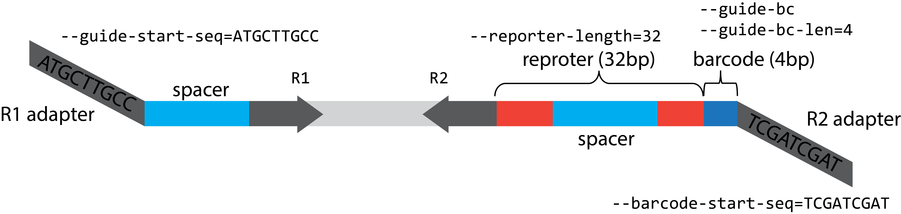

bean count¶
bean count[-samples]: Count (reporter) screen data¶
bean count-samples (or bean count for a single sample) maps guide into guide counts, allowing for base transition in spacer sequence. When the matched reporter information is provided, it can count the target site edits and alleles produced by each guide. Mapping is efficiently done based on CRISPResso2 modified for base-edit-aware mapping.
bean count-samples \
--input sample_list.csv `# sample with lines 'R1_filepath,R2_filepath,sample_name\n'` \
-b A `# base that is being edited (A/G)` \
-f sgRNA_info_table.csv `# sgRNA information` \
-o . `# output directory` \
-r `# read edit/allele information from reporter` \
-t 12 `# number of threads` \
--name my_sorting_screen `# name of this sample run` \
bean count --R1 R1.fq --R2 R2.fq -b A -f sgRNA_info_table.csv -r
By default, bean count[-samples] assume R1 and R2 are trimmed off of the adapter sequence. You may need to adjust the command arguments according to your read structure.

See full detail below.
Input file format¶
See Input file format for input file formats.
Output file format¶
count or count-samples produces .h5ad and .xlsx file with guide and per-guide allele counts.
.h5ad: This output file follows annotated matrix format compatible with AnnData and is based on Screen object in [purturb_tools](https://github.com/pinellolab/perturb-tools). See Data Structure section for more information.
.xlsx: This output file contains.guides,.samples,.X[_bcmatch,_edits]. (allele_tablesare often too large to write into an Excel!)
Full parameters¶
usage: bean count [-h] --R1 R1 --R2 R2 -b EDITED_BASE -f SGRNA_FILENAME
[--guide-start-seq GUIDE_START_SEQ]
[--guide-end-seq GUIDE_END_SEQ]
[--barcode-start-seq BARCODE_START_SEQ] [-r]
[-q MIN_AVERAGE_READ_QUALITY] [-s MIN_SINGLE_BP_QUALITY]
[-n NAME] [-o OUTPUT_FOLDER] [-l REPORTER_LENGTH]
[--keep-intermediate] [--qstart-R1 QSTART_R1]
[--qend-R1 QEND_R1] [--qstart-R2 QSTART_R2]
[--qend-R2 QEND_R2] [--gstart-reporter GSTART_REPORTER]
[--match-target-pos] [--target-pos-col TARGET_POS_COL]
[--guide-bc GUIDE_BC] [--guide-bc-len GUIDE_BC_LEN]
[--offset] [--align-fasta ALIGN_FASTA] [--string-allele]
[-g] [-m] [--tiling]
Named Arguments¶
- --R1
FASTQ file path for read 1
- --R2
FASTQ file path for read 2.
- -b, --edited-base
For base editors, the base that should be ignored when matching the gRNA sequence
- -f, --sgRNA-filename
sgRNA description file. The format requires three columns: name, sequence, barcode [ reporter [,strand, target_pos], [start_pos, offset] ].
- --guide-start-seq
Guide starts after this sequence in R1
Default: “”
- --guide-end-seq
Guide starts after this sequence in R1
Default: “”
- --barcode-start-seq
Barcode + reporter starts after this sequence in R2, denoted as the sense direction (the same sequence direction as R1).
Default: “”
- -r, --count-reporter
Count reporter edits.
Default: False
- -q, --min-average-read-quality
Minimum average quality score (phred33) to keep a read
Default: 30
- -s, --min-single-bp-quality
Minimum single bp score (phred33) to keep a read
Default: 0
- -n, --name
Output name
Default: “”
- -o, --output-folder
Default: “”
- -l, --reporter-length
length of the reporter
Default: 32
- --keep-intermediate
Keep all the intermediate files
Default: False
- --qstart-R1
Start position of the read when filtering for quality score of the read 1
Default: 0
- --qend-R1
End position of the read when filtering for quality score of the read 1
Default: 47
- --qstart-R2
Same as qstart_R1, for read 2 fastq file
Default: 0
- --qend-R2
Same as qstart_R2, for read 2 fastq file
Default: 36
- --gstart-reporter
Start position of the guide sequence in the reporter
Default: 6
- --match-target-pos
Count the edit in the exact target position.
Default: False
- --target-pos-col
Column name specifying the relative target position within reporter sequence.
Default: “target_pos”
- --guide-bc
Construct has guide barcode
Default: True
- --guide-bc-len
Guide barcode sequence length at the beginning of the R2
Default: 4
- --offset
Guide file has offest column that will be added to the relative position of reporters.
Default: False
- --align-fasta
gRNA is aligned to this sequence to infer the offset. Can be used when the exact offset is not provided.
Default: “”
- --string-allele
Store allele as quality filtered string instead of Allele object
Default: False
- -g, --count-guide-edits
count the self editing of guides
Default: False
- -m, --count-guide-reporter-alleles
count the matched allele of guide and reporter edit
Default: False
- --tiling
Specify that the guide library is tiling library without ‘n guides per target’ design
Default: False